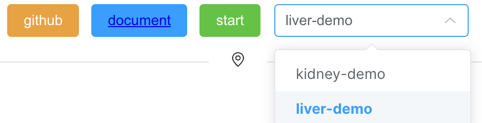

Installation & Usage
Installation
First, please go to github website to download the Spatial-Live:
$ git clone https://github.com/yezhenqing/spatial-live
There are two ways to start Spatial-Live for different users:
regular user
You may need to install docker on your computer already, then you can run the below command:
$ cd spatial-live
$ docker compose -f docker-compose.yml up -d
development user
If you are a development user, I will assume you already installed node/npm on your computer:
$ cd spatial-live
$ npm install
$ npm run dev
Usage
After the docker or node server started, the Spatial-Live will be ready for exploration. You can open your browser to visit the url link: http://localhost:8225/
Tip
If you feel the page freezed, please refresh the page several times.
Spatial-Live has provided a built-in demo for exploration, so you can be familiar with the tool quickly. To start with your own case, you can wrap up your data files into a new clean folder (For example, suppose we have our own data set – liver-demo), and then copy this folder into the proper location.
If you are using Spatial-Live via docker, copy to spaital-live/userdata/:
$ cp -r /your_paht_to/liver-demo spatial-live/userdata/
$ docker compose -f docker-compose.yml up -d
If you are using Spatial-Live via node.js, copy to spatial-live/src/data/:
$ cp -r /your_paht_to/liver-demo spatial-live/src/data/
$ npm run dev
Now you should be able to open browser (http://localhost:8225) to see the data set you just added as shown below:
Warning
Your data folder names must contain only alphanumeric characters or underscore and hyphen, no space/blank allowed.